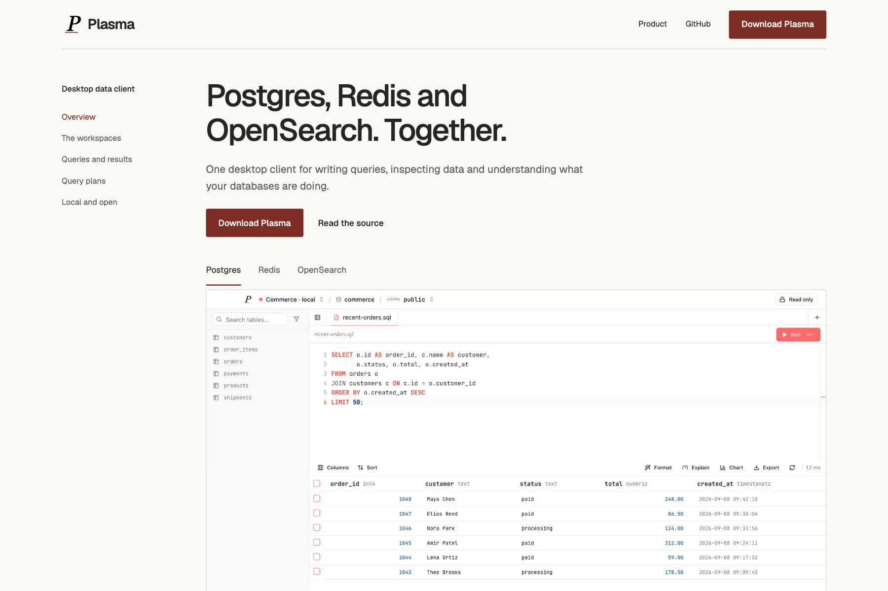

A. Reference
Structured and technically explicit. A persistent navigation margin makes the page feel like an excellent product guide.
Tradeoff: strongest clarity; less expressive.
Open Reference previewSame product. Different emphasis. Open each preview to compare its first viewport, supporting sections and mobile layout before choosing a direction.
These are isolated direction previews, not changes to the current landing page. Product images render actual Plasma components with illustrative data. Download links go to published GitHub releases. Choose A, B or C in the conversation, or specify which parts you want combined.